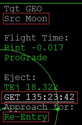
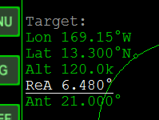
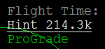
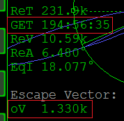
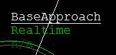
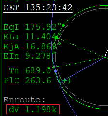
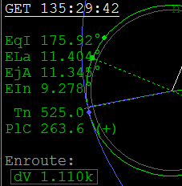
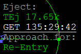

AMSO アポロ11号チュートリアル Part5 （TEIの準備+実行）
CSMとLMを分離する
CSMに乗った状態で、Jを押すと分離の確認メッセージが出る。
もう一度Jを押すと分離する。（史実ではGET 130:09:31に実行）
TEIの準備+実行
以下の記事も参考にしてください。
IMFD Part6 BaseApproachとOrbit Insertで基地上空へ
BaseApproachでプランを作成する
左MFDでIMFDを開く。
Program MenuからBaseApproachを選択。
PGをクリックしてSrcボタンを表示。
Srcをクリックして、Moonと入力する。
Approach for: Re-Entryになっていることを確認する。
GETを史実の出発時間、135:23:42にする。

Target:の下の項目に、以下の数字を入力する。
| Lon | -169.15 (169.15°W) |
| Lat | 13.3 (13.300°N) |
| Alt | 120.0k |
| ReA | 6.48 |
| Ant | 21 |

※ReA(Reentry angle)は再突入の角度、Ant(anticipation)は突入から着地までの移動を角度で表している
参照：IMFD Base Approach – OrbiterWiki
入力が終わったら、Flight Time:の下のHintを選択する。
+を長押しクリックすると、Hintの数字が変わる。

※Hintは出発から再突入までの移動時間を意味する
ReT(Reentry Time)の下のGETが予定時刻（史実では195:03:05）に近づくようにする。
また、oVができるだけ小さくなるようにする。

今回の例では、Hintは214.3kになっている。
Prvをクリックしてほかの項目を選択すると、Hintの数字は自動的に調整される。
Hintの調整がうまくいかないとき
Hintが極端な値になってしまうときは、Antの数字を増やしてみてください。
今回のAntは21°ですが、12号では25°くらいにすると調整しやすくなります。
Orbit Ejectでプランを微調整・実行する
上の作業が終わったら、右MFDでもIMFDを開く。
左MFDのデータを共有させる。Program MenuでPGをクリックして0と入力。
Orbit Ejectを選択する。
+を何度かクリックして、Higher OrbitをBaseApproachにする。

GETを左MFDのEject:と同じ数字にする。

そこからGETを調整して、dVができるだけ小さくなるようにする。

この作業が終わったら、左MFDに戻る。
Eject:の下のGETを右MFDの数字と同じにする。

終わったら、右MFDのOrbit-EjectでABボタンをクリック。
自動噴射が実行されるのを待つ。
史実のアポロ再突入・着水のデータ
実際の再突入・着水に関する日時や座標については、以下のリンクを参照してください。
Entry, Splashdown, and Recovery